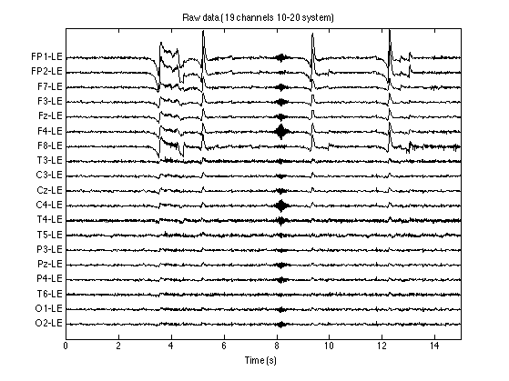
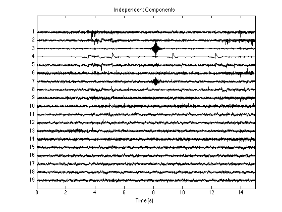
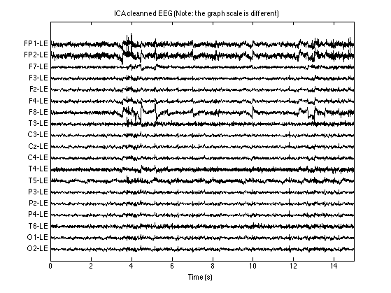
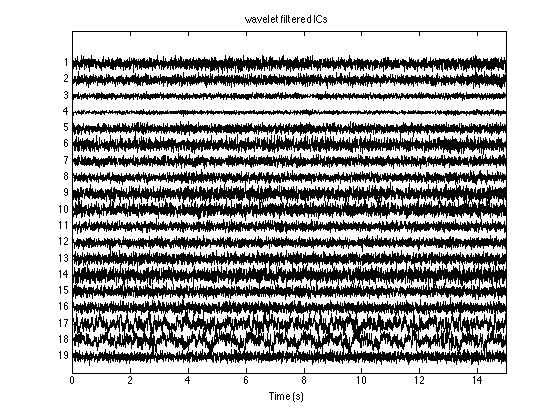
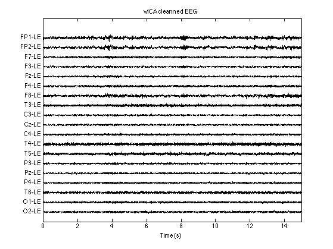
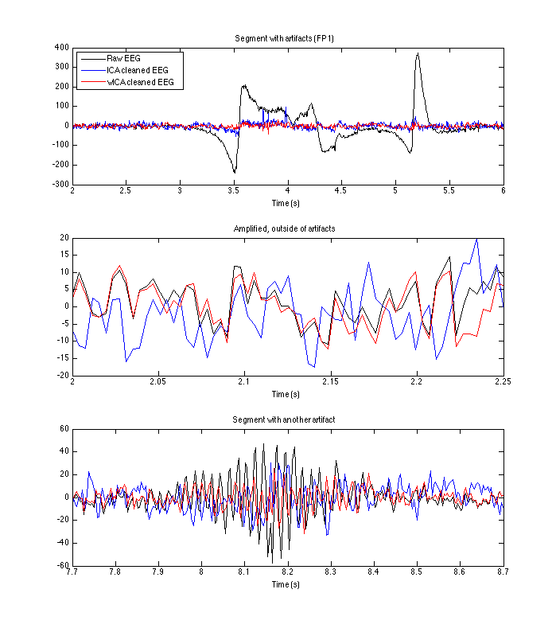

Example #1 showing the basic usage of wICA algorithm
This code is for illustration of the method described in: N.P. Castellanos and V.A. Makarov (2006). "Recovering EEG brain signals: Artifact suppression with wavelet enhanced independent component analysis" J. Neurosci. Methods 158, 300-–312.
This code is copyright © by the authors, and we hope you acknowledge our work. We distribute it in the hope that it will be useful, but without any warranty.
Author: Valeri A. Makarov
e-mail: vmakarov@mat.ucm.es
http://www.mat.ucm.es/~vmakarov/index.html
Modified: Oct. 2012
Contents
- Reset environment
- Load test data
- Conventional notch filter (you may add more)
- Conventional High Pass Filter
- Drop starting end ending 0.5s (remove edge perturbations)
- Remove mean values from the channels and plot raw data
- Find independent components
- Common ICA artifact suppression method
- wICA artifact rejection
- Make comparative plots
Reset environment
close all clear all
Load test data
Fs = 256; % Sampling frequency in Hz [Data, ChanTitels, FileName] = ReadTruScan_ascii('./Data/test1.tdt');
Conventional notch filter (you may add more)
This is an optional step (suppress 50Hz noise)
Fnyq = Fs/2;
F_notch = 50; % Notch at 50 Hz
[b,a] = iirnotch(F_notch/Fnyq, F_notch/Fnyq/20);
Data = filtfilt(b,a, Data);
Conventional High Pass Filter
This is an optional step (suppress low <4Hz frequency noise)
F_cut = 4;
[b,a] = ellip(1, 0.5, 20, F_cut/Fnyq, 'high');
Data = filtfilt(b,a, Data);
Drop starting end ending 0.5s (remove edge perturbations)
Data = Data(129:end-128,:);
Remove mean values from the channels and plot raw data
Data = detrend(Data,'constant'); % Transpose the data matrix to get (channel x time) orientation Data = Data'; figure('color','w'); PlotEEG(Data, Fs, ChanTitels, 200, 'Raw data (19 channels 10-20 system)');
Find independent components
Here for ICA I use fastICA algorithm (package included, for details see the corresponding functions). Note: in the original paper runica from EEGLAB was used. You can also test other ICA algorithms at this step.
Note, the use of long (in time) data sets REDUCES the quality of artifact suppression (for details see the abovementioned paper). Split long files into segments and clean them separately.
[icaEEG, A, W] = fastica(Data,'stabilization','off','verbose','off'); figure('color','w'); PlotEEG(icaEEG, Fs, [], [], 'Independent Components'); xlabel('Time (s)')
Common ICA artifact suppression method
Remove artifact components and rebuild signals
An input dialog will be open, where you should enter the ICs (separated by coma) to be removed (those with artifacts)
answer = inputdlg({'Artifact ICs'},'Components to remove',1);
ArtICs = str2num(answer{1});
disp(['Suppressed components: ' answer{1}]);
icaEEG1 = icaEEG;
icaEEG1(ArtICs, :) = 0; % suppress artifacts
Data_ICA = A*icaEEG1; % rebuild data
figure('color','w');
PlotEEG(Data_ICA, Fs, ChanTitels, 100, 'ICA cleanned EEG (Note: the graph scale is different)');
Suppressed components: 3,4,7
wICA artifact rejection
NOTE: For better artifact suppression, provide manually the numbers of components to be processed. You can also tune the other arguments for your data set.
nICs = 1:size(icaEEG,1); % Components to be processed, e.g. [1, 4:7] Kthr = 1.25; % Tolerance for cleaning artifacts, try: 1, 1.15,... ArtefThreshold = 4; % Threshold for detection of ICs with artefacts % Set lower values if you manually select ICs with % artifacts. Otherwise increase verbose = 'on'; % print some intermediate results icaEEG2 = RemoveStrongArtifacts(icaEEG, nICs, Kthr, ArtefThreshold, Fs, verbose); figure('color','w'); PlotEEG(icaEEG2, Fs, [], [], 'wavelet filtered ICs'); Data_wICA = A*icaEEG2; figure('color','w'); PlotEEG(Data_wICA, Fs, ChanTitels, 100, 'wICA cleanned EEG');
Calculating the component #1 ****. Too low threshold, set to default. Tolerance 0.253705 Calculating the component #2 ****. Too low threshold, set to default. Tolerance 0.192510 Calculating the component #3 ****. Too low threshold, set to default. Tolerance 0.189368 Calculating the component #4 *****. Achieved tolerance 0.001286 Calculating the component #5 ****. Achieved tolerance 0.000123 Calculating the component #6 ****. Too low threshold, set to default. Tolerance 0.340019 Calculating the component #7 ***. Too low threshold, set to default. Tolerance 0.109686 Calculating the component #8 *****. Achieved tolerance 0.001883 Calculating the component #9 ****. Too low threshold, set to default. Tolerance 0.329078 Calculating the component #10 **. Too low threshold, set to default. Tolerance 0.383752 Calculating the component #11 ****. Achieved tolerance 0.000409 Calculating the component #12 ******. Achieved tolerance 0.000094 Calculating the component #13 ****. Too low threshold, set to default. Tolerance 0.211678 Calculating the component #14 **. Too low threshold, set to default. Tolerance 0.415181 Calculating the component #15 ***. Too low threshold, set to default. Tolerance 0.112559 Calculating the component #16 ****. Too low threshold, set to default. Tolerance 0.216559 The component #17 passed unchaneged. The component #18 passed unchaneged. Calculating the component #19 ****. Too low threshold, set to default. Tolerance 0.195851 
Make comparative plots
In the first 2 subplots I plot a segment with (ocular) artifacts and an artifact-free segment. Note that in the artifact-free segment, good artifact suppression method should conserve (not perturb) the original EEG signal. 3rd subplot shows another example of artifact suppression.
TimeInterval1 = [2, 6]; TimeInterval2 = [2, 2.25]; TimeInterval3 = [7.7, 8.7]; figure('color','w','position',[100 100 700 800]) subplot(3,1,1); nT1 = round(TimeInterval1(1)*Fs); nT2 = round(TimeInterval1(2)*Fs); plot((nT1:nT2)/Fs, Data(1,nT1:nT2),'k',(nT1:nT2)/Fs, Data_ICA(1,nT1:nT2),'b',... (nT1:nT2)/Fs, Data_wICA(1,nT1:nT2),'r'); xlim(TimeInterval1) xlabel('Time (s)') legend({'Raw EEG','ICA cleaned EEG','wICA cleaned EEG'},'Location','NorthWest'); title('Segment with artifacts (FP1)') subplot(3,1,2); nT1 = round(TimeInterval2(1)*Fs); nT2 = round(TimeInterval2(2)*Fs); plot((nT1:nT2)/Fs, Data(1,nT1:nT2),'k',(nT1:nT2)/Fs, Data_ICA(1,nT1:nT2),'b',... (nT1:nT2)/Fs, Data_wICA(1,nT1:nT2),'r'); xlim(TimeInterval2) title('Amplified, outside of artifacts') xlabel('Time (s)') subplot(3,1,3); nT1 = round(TimeInterval3(1)*Fs); nT2 = round(TimeInterval3(2)*Fs); plot((nT1:nT2)/Fs, Data(1,nT1:nT2),'k',(nT1:nT2)/Fs, Data_ICA(1,nT1:nT2),'b',... (nT1:nT2)/Fs, Data_wICA(1,nT1:nT2),'r'); xlim(TimeInterval3) title('Segment with another artifact') xlabel('Time (s)')